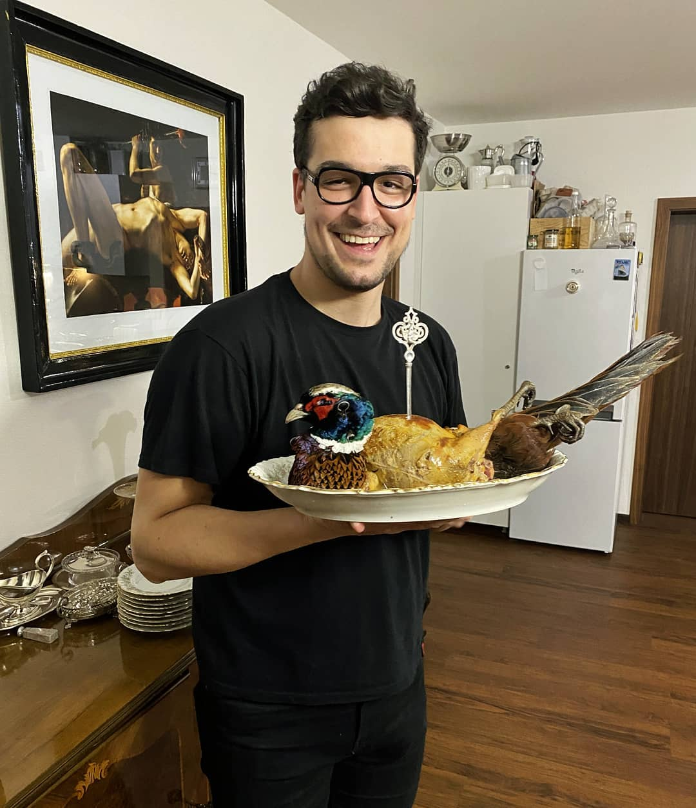

Pečený bažant podľa @staromilec — Normy Jedál
Toto je jeden z pokrmů, který mě vždycky fascinoval, a který jsem chtěl vždycky zkusit: pečený bažant servírovaný i s hlavou a ocasem, jako se to dělávalo až do konce 19. století. A když jsme se konečně po dlouhé době viděli s Editou a Honzou z @OhMyChefCZ, řekl jsem si, že je ta pravá chvíle pro tento recept. 😊
Honza je šéfkuchař, který vařil v brněnském Pavilonu, Edita je zase zmlsaná, a tak mám radost, že jim moje starobylé menu z 19. století chutnalo, i když se sami na svém blogu i vaření zabývají moderní kuchyní.
Možná vám to může připadat morbidní, protože moderní člověk je zvyklý na jednotlivé porce kousků masa ze supermarketu, než že by si kupoval nebo choval zvířata, která pak musí celá zpracovat.
Ale já jsem chtěl zkusit si bažanta oškubat, vykuchat, rozporcovat, a celého zpracovat, což se mně podařilo, a vyhodil jsem jen nepoživatelné vnitřnosti, všechno ostatní jsem upotřebit. A vykostil jej můj brácha, a to tak, že bažant zůstal neporušený - to já bych nezvládl. 😁
Bažanta jsem připravil nadívaného kaštany, s demi-glace z odřezků a kostí, se smetanovou zeleninou. Bažanta jsem ozdobil opeřenou hlavou, ocasem, a nechal mu i pařáty, jako v 19. století.
Předtím se to dokonce dělalo taky že bažant se stáhl z kůže i s peřím, upekl, a pak se na něj při podávání kůže zase natáhla, a tak se prezentoval hostům. No, ale to už na konci 19. století nepovažovali za hygienické. 😁
Také jsem jej ozdobil jehlicí, jaké se tehdy do pečínek zapíchávaly. Je na ní dokonce právě bažant, a mám ji ze starožitnictví @Antikvita_Prague_cz
Recept brzy přidám na blog, a fotky menu najdete ve stories a na profilu @OhMyChef. 😉
#pecenybazant #bazant #nadivka #muzvkuchyni #19stoleti #staryrecept #starekucharky #miladaslavinova #zverina #divocina #pernatazver #roastpheasant #ivanday #stuffedpheasant #victorianfood #victoriancooking #oldcookerybooks #gracioustables #edwardiancooking ##faisanfarci #faisanrôti